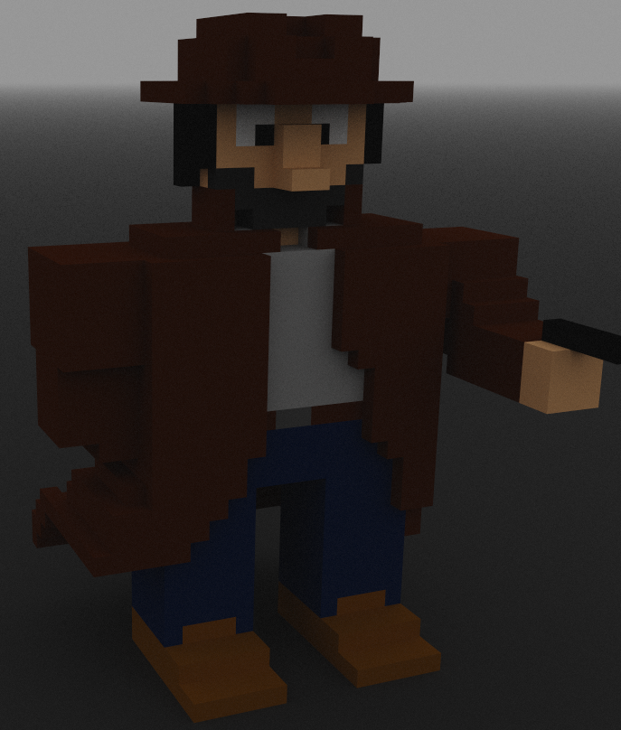

EP 01: The Impossible Case of Dr. Euphorbia

Your phone rings. You welcome the shrill sound as an escape from an uneasy nightmare. Adjusting your dirty trench coat you slowly sit upright on your filthy sofa. Slowly, not too fast, afraid to anger the gods of the bottle of bourbon still large in your head. You blink a couple of time to get your eyes used to the little light there is. but really, you are just wasting time in hopes the caller will give up. Finally, you realize that is not going to happen anytime soon - also you could really use some cash. That is enough motivation to at least get you on your feet. Slowly you move towards the angrily ringing phone. The closer you get, that harder you hangover kicks in. Again, motivation to keep moving faster.
You grab the phone with your left hand and pull it towards your side of the desk. With your right hand you pick up the receiver and hold of onto your ear.
"Yea?" No need for introductions. everyone who calls this number knows who they are talking to.
"Are you interested in solving an impossible murder?" a young ladies warm voice hollowed through the phone. If she had been here in person, all the clichés would have been fulfilled.
"That depends" You keep your cool. This old gumshoe has been through enough to not fall for the next stunning dame to walk into his live, especially as long as she is just a voice.
"That depends on the payment, am I right?" she was a clever one. "Don't you worry about that. I am sure that we can pay whatever you desire!" That is one hell of a way to put 'I'm filthy rich' into words.
"I need more details." Aside from an address I did not get much out of her.
I met the lady and her looks held what her voice had promised. However, solving the case had priority. Things where suspicious from the start. A locked room, no way in, no way out. Nobody had access, there was only one key that that was inside the room. The corpse was found after the door had been broken down. A maid had been alerted after hearing Dr. Euphorbia scream and cough. The poor old lady was still shaking, seeing the dead man must have been a shock, but hearing him die must have blown a fuse or two. The corpse was still in the room, police was swarming the place but had not found anything yet. Jenkins, my old buddy had suggested to call me in, so here I was, investigating a mysterious murder of a famous botanist.
My fist instinct was to ask all the people involved. That proved to be fruitless. The shock had eaten away the recent memories. I only got to know that nobody had ever seen the inside of that room. Apparently it was kept under holy lockdown or something. Servants where not even allowed to bring in drinks or wood for the fireplace. So I decided to go into the room first to find out how the murder had happened.